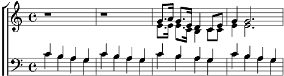

1. [TB] pom pom om...
[SA] C'est dans un coin du bois d'Boulogne
Que j'ai rencontré Félicie
Elle arrivait de la Bourgogne
Et moi j'arrivai en taxi
Je trouvai vite une occasion
D'engager la conversation
Refrain:
Il faisait un temps superbe
Je me suis assis sur l'herbe
Félicie aussi
J'pensais les arbres bourgeonnent
Et les gueules de loup boutonnent
Félicie aussi
Près de nous sifflait un merle
La rosée faisait des perles
Félicie aussi
Un clocher sonnait tout proche
Il avait une drôle de cloche
Félicie aussi
2. Afin d'séduire la petite chatte
Je l'emmenai dîner chez Chartier
Comme elle est fine et délicate
Elle prit un pied d'cochon grillé
Et pendant qu'elle mangeait le sien
J'lui fit du pied avec le mien
Refrain:
J'pris un homard sauce tomates
Il avait du poil au pattes
Félicie aussi
Puis une sorte de plat aux nouilles
On aurait dit une andouille
Félicie aussi
Je m'offris une gibelotte
Elle embaumait l'échalotte
Félicie aussi
Puis une poire et des gaufrettes
Seulement la poire était blette
Félicie aussi
3. L'Aramon lui tournant la tête
Elle murmura " quand tu voudras "
Alors j'emmenai ma conquête
Dans un hôtel tout près de là
C'était l'hotêl d'Abyssinie
Et du Calvados réuni
Refrain:
J'trouvai la chambre ordinaire
Elle était pleine de poussière
Félicie aussi
Je m'lavai les mains bien vite
L'lavabo avait une fuite
Félicie aussi
Sous l'armoire y avait une cale
Car elle était toute bancale
Félice aussi
Y avait un fauteuil en plus
Mais il était rempli d'puce
Félicie aussi
Et des draps de toiles molles
Me chatouillaient les guiboles
Félicie aussi